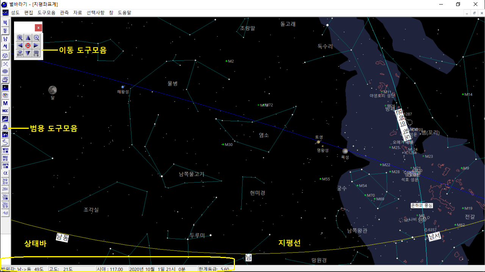

앞서 별바라기를 설치하고 그 기능들을 살펴보았지만 화면 가득 펼쳐진 무수한 별자리를 바라보면 어떤 것부터 손을 대보아야 할지 망설여지게 된다. 이제 우리는 아주 기초적인 작동 법부터 하나 하나 익혀가며 별바라기 내 것 만들기를 시작해 보기로 하자.
별바라기를 처음 시작하면 현재 시간의 남쪽 하늘의 모습이 보인다. 화면의 아래쪽의 노란색 선은 지평선을 나타내며 방위 표시가 되어 있다. 먼저 이동 도구모음을 이용하여 성도의 시야와 위치를 조절해보자.
|  |
이동 도구모음은 상하좌우, 확대/축소, 온 하늘성도, 찾기, 이동으로 구성되어 있다. 확대/축소를 제외하고 모두 성도의 중심 위치를 이동시키는 도구들이다. 상하좌우 버튼은 성도의 중심을 이동시키며, ctrl키를 누른 상태에서 상하좌우 버튼을 누르면 미세 조정이 가능하다. 확대, 축소 버튼은 성도의 시야를 변화시킨다. 온 하늘 성도 버튼은 현재 시간에 해당하는 하늘 전체의 모습을 보여준다.
성도의 시야는 기본적으로 1단계 1.2도부터 28단계 304도 까지 변화시킬 수 있다. 이동 도구모음의 ‘확대/축소’ 버튼을 누르거나, ‘+/-‘키를 누름으로써 시야를 변화시킨다. Ctrl키를 누른 상태에서 확대/축소 버튼을 누르면 가로 시야의 1/20씩 시야가 확대/축소된다. 1단계에서도 Ctrl키를 누른 상태에서 확대 버튼을 누르면 계속해서 확대가 가능하다. 현재의 시야는 화면의 아래 정보바에 표시된다. 정보바에 표시되는 값은 화면의 가로 시야를 나타내며, 세로 시야는 윈도의 가로 세로 비율에 의해 결정된다. 성도의 중심은 이동 도구모음의 상하좌우 방향키를 누름으로써 움직일 수 있다. 상하 방향키는 성도 가로 시야의 1/8씩, 좌우 방향키는 성도 가로 시야의 1/5씩 성도의 중심이 움직인다. 또 ctrl키를 누른 상태에서 방향키를 누르면 상하좌우 모두 가로 시야의 1/20씩 성도의 중심이 움직인다.
찾기 윈도는 태양계 대상의 이름, 별 이름, Deep Sky 이름, 별자리 이름, 메시에 번호, NGC/IC 번호, SAO 번호(아직 구현 안됐음) 등으로 원하는 대상을 찾을 수 있는 기능을 제공한다. 레디오 버튼 중 하나를 선택하면 해당 그룹에 해당하는 목록이 나타난다. 태양계 대상의 경우는 태양, 달, 아홉 개의 행성 이외에 현재 성도에 표시되는 혜성, 소행성, 인공위성도 목록에 보여준다. 목록에서 찾고자 하는 대상을 선택한 후 확인 버튼을 누르거나 더블 클릭한다. NGC/IC 번호, 메시에 번호, SAO 번호로 대상을 찾고자 할 때는 찾기 윈도의 아래쪽에 있는 버튼 중 원하는 목록의 레디오 버튼을 클릭한 후 목록 번호를 입력하고 확인 버튼을 누른다. 별자리의 경우는 별자리 이름이 있는 위치를 성도의 중심으로 이동시키며, 기타 대상의 경우는 해당 대상을 성도의 중심으로 이동시킨다.
이동 윈도에는 전체 하늘을 나타내는 작은 성도가 그려지며, 여기에 별자리 모양선이 그려진다. 작은 성도 내에서 이동하고자 하는 곳을 더블 클릭하면, 클릭 된 곳을 중심으로 성도가 이동된다.
범용 도구모음은 이동 도구모음 다음으로 많이 사용되는 기능을 모아 놓았다. 주로 [보기]메뉴에서 조정할 수 있는 내용들이 포함되어 있다.
정보바는 화면의 맨 아래쪽에 표시되며, 성도의 중심 좌표, 시야, 시간, 한계 등급이 표시된다. 한계 등급은 성도에 표시된 가장 어두운 별의 등급이다.
성도에서 오른쪽 마우스 버튼을 클릭하면 옆 그림과 같은 메뉴가 나타난다. [중심으로] 메뉴는 기본적으로 보이는 것이며, 그 아래에 있는 메뉴는 클릭 된 곳에 위치한 대상을 가리킨다. 이중에서 정보를 얻고 싶은 대상을 선택하면 그 대상의 상세 정보를 얻을 수 있다. 자세한 내용은 ‘12. 대상 확인 및 정보’를 참조하시오.
별바라기에서는 화면의 성도를 파일로 저장하고, 불러올 수 있는 기능을 제공한다. 저장 시에는 성도의 가로, 세로 크기, 혜성, 궤적 정보, 폰트, 선 색깔, 대상의 표시 여부 등의 정보를 포함한 성도의 모든 상태가 저장된다. 저장된 성도는 ‘.sky’라는 확장자를 가지며 [성도][열기...] 메뉴를 선택해서 다시 불러올 수 있다. 별바라기 디렉토리의 Samples 디렉토리에는 이미 작성된 성도들이 저장 되어 있다. 하위 버전에서 작성된 파일도 읽을 수 있으나, 일부 파일에 대해서는 상위 버전에서 못 읽을 수도 있다. 거리 측정자 등 일부 정보는 저장되지 않는다.
별바라기를 종료할 때는 현재 성도의 상태를 Program/StarFlower.ini 파일에 저장한다. 기록되는 정보는 중심의 적경, 적위 좌표, 시야, 폰트 정보, 선 색깔 정보, 대상의 표시 여부 등이다. 단 혜성, 소행성, 인공위성의 정보는 기록되는 않는다. 별바라기를 다음에 실행할 때는 별바라기.ini 파일에 기록된 내용을 보고, 바로 전에 별바라기를 끝마친 상태와 같은 상태를 만들어 준다. 설치 후에 맨 처음 실행하거나 StarFlower.ini가 없을 때는 초기 설정값으로 시작된다.
별바라기 홈 최종 변경: 2020년 05월 31일